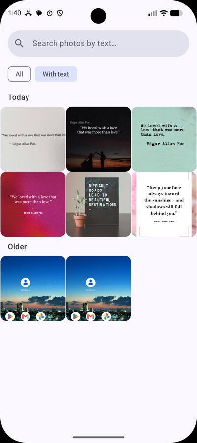
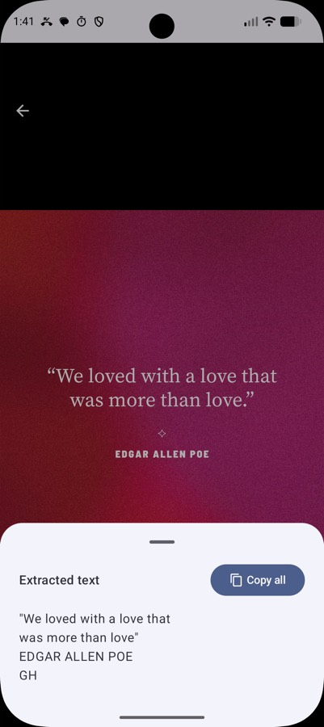

LocalPhotos: searching pictures by the words inside them, offline
I knew I had screenshotted that address. I could not find it. Scrolling through four thousand photos is not a search feature.

My camera roll is mostly screenshots. Addresses, order numbers, WiFi passwords, a recipe someone posted, a bank reference, the seat number on a ticket. I screenshot things instead of writing them down, and then I lose them, because a gallery sorts by date and I have no idea what date it was.
Google Photos solves this — it reads the text in your images and lets you search it. It also means your entire photo library lives on someone else's disk, indexed and machine-readable.
The capability doesn't require the upload. ML Kit Text Recognition v2 runs on the device. So LocalPhotos does the same thing with nothing leaving the phone.
What it does
It walks your gallery, runs OCR on each image, stores the extracted text in a local database, and gives you a search box. Type "chicken" and you get the recipe screenshot. Type a street name and you get the map you saved eight months ago.


There's a "With text" filter, because a surprising fraction of any gallery is photos with no words in them at all and hiding those makes the grid much more useful. Favourites, a full-screen viewer that shows you exactly what the OCR extracted, and automatic detection of new photos so the index stays current.
The interesting part is the database
OCR is the easy half — ML Kit does it and it's genuinely good. The half that decides whether the app is usable is search.
A naive implementation stores the text in a column and runs LIKE '%query%'. That works at a hundred photos and falls over at a few thousand, because every search is a full table scan over a lot of text.
LocalPhotos uses Room with FTS4 — SQLite's full-text search. It builds an inverted index: instead of storing text and scanning it, it stores which words appear in which rows. Searching becomes a lookup rather than a scan, and stays fast as the library grows.
Why this matters more than it sounds. The whole value of the app is typing a word and getting an answer immediately. A search that takes two seconds feels broken even when it returns the right result — you stop trusting it and go back to scrolling. FTS4 is a one-line annotation in Room and it's the difference between a demo and something I actually use.
Not melting the phone
The unglamorous problem: OCR on a few thousand photos is a lot of work, and if you do it naively the app freezes, the battery drains, and Android kills you.
So indexing is batched — one or two images at a time — rather than dispatched all at once. It's slower in wall-clock terms and completely invisible to the user, which is the correct trade. The UI stays responsive, you can search whatever has been indexed so far, and the rest fills in behind you.
Thumbnails are cached separately, so the grid scrolls at full speed regardless of what the indexer is doing.
The stack
| Concern | Choice |
|---|---|
| OCR | ML Kit Text Recognition v2, on-device |
| Storage & search | Room with FTS4 |
| UI | Jetpack Compose, Material 3 |
| Images | Coil |
| Lists | Paging 3 |
| DI | Koin |
| Architecture | MVVM with a repository layer |
| Minimum | Android 8.0, API 26 |
Paging 3 rather than loading the gallery into a list, because a gallery is exactly the case it was designed for — you cannot hold thousands of photo records and their thumbnails in memory and expect to survive.
What it gets wrong
OCR quality is the ceiling. Clean screenshots are near-perfect; handwriting, stylised fonts, low light and heavy skew are much weaker. The app is only as good as what ML Kit reads, and when the text comes back garbled the search simply can't find it.
The first index of a large gallery takes a while. That's inherent — it's genuinely doing OCR on every image — but it means the app is least impressive in the first ten minutes, which is exactly when someone decides whether to keep it.
It also only indexes what the gallery exposes. Images inside other apps' private storage are invisible to it, which is Android working correctly, but it means the odd screenshot saved somewhere unusual won't show up.
Why build it
Because the feature is good and the price shouldn't be your entire photo library. On-device OCR is fast, free and built into the platform. The only thing the cloud version adds is the cloud.
← All posts